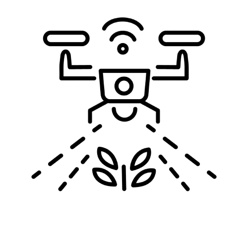

Real-Time Monitoring
Monitor soil and weather conditions live.

Smart Irrigation
Automate watering based on real-time data.

Pest Detection
AI-powered pest and disease identification.
Monitor, automate, and analyze agricultural activities for better productivity.
Get StartedMonitor soil and weather conditions live.
Automate watering based on real-time data.
AI-powered pest and disease identification.